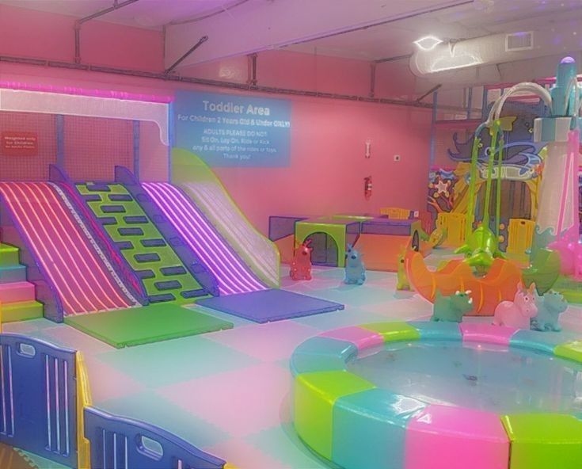

You arrive at an old play place your parents used to take you all the time as a kid. It looks just as bright and colorful as you remember. There's no kids or adults around but you have fond memories of playing with your friends here and eating shitty pizza. What will you do?

keep going
go back